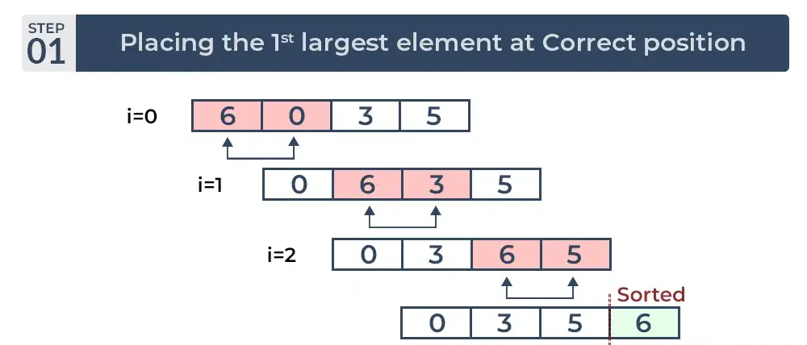
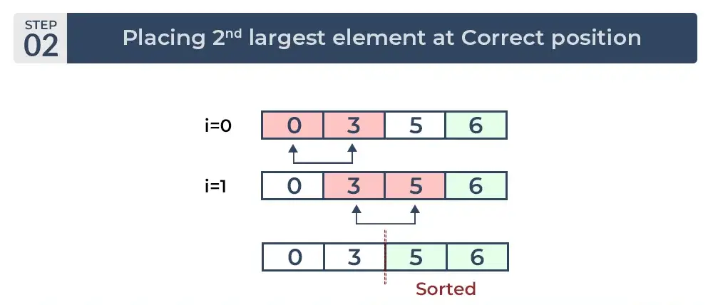
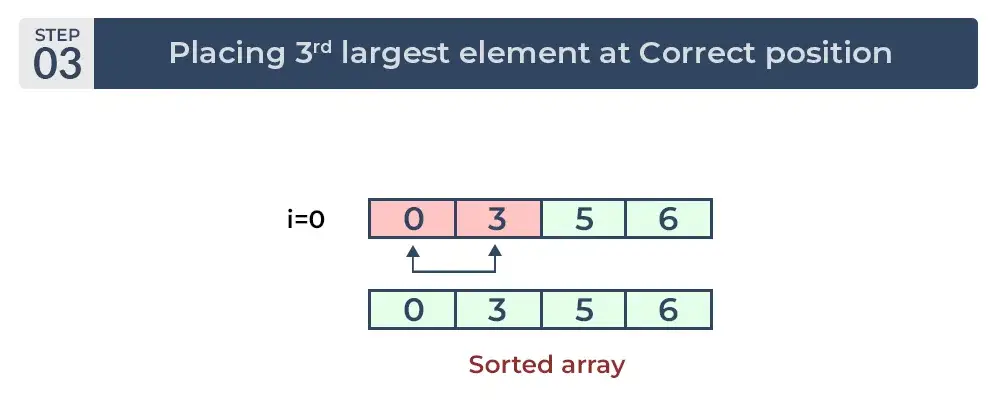
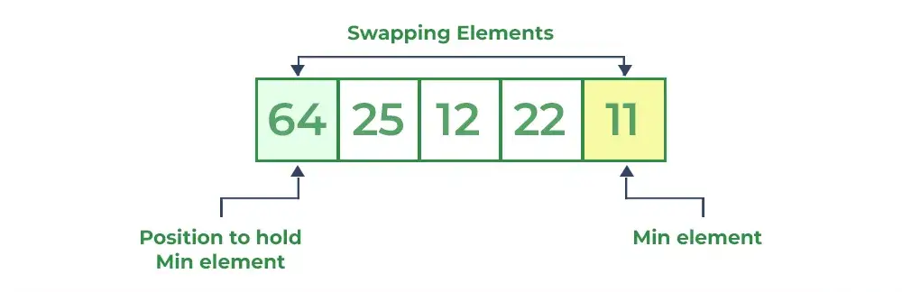
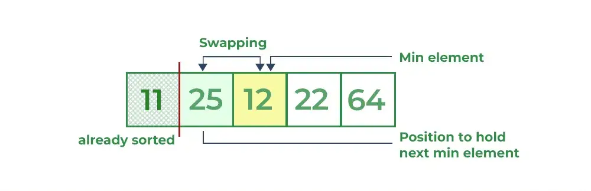
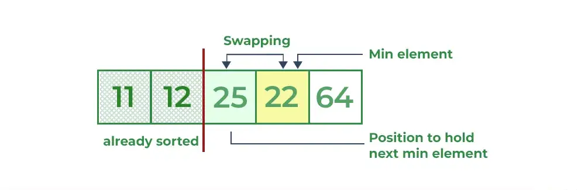
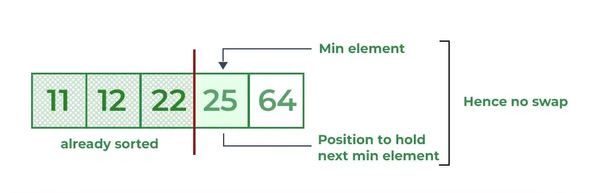
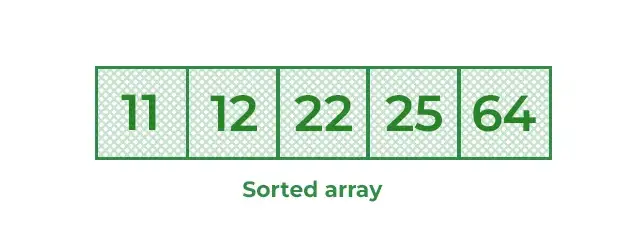
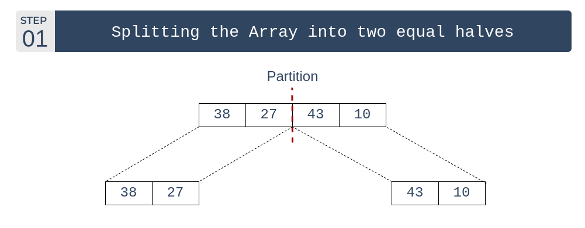

Traverse from left and compare adjacent elements and the higher one is placed at right side.
In this way, the largest element is moved to the rightmost end at first.
This process is then continued to find the second largest and place it and so on until the data is sorted.
How does Bubble Sort Work?
Let us understand the working of bubble sort with the help of the following illustration:
Input : arr[] = {6, 3, 0, 5}
First Pass :
The largest element is placed in its correct position, i.e., the end of the array.

Second Pass :
Place the second largest element at correct position.

Third Pass :
Place the remaining two elements at their correct positions.

Total no. of passes : n-1
Total no. of comparisons : n*(n-1)/2
Advantages of Bubble Sort :
Bubble sort is easy to understand and implement.
It does not require any additional memory space.
It is a stable sorting algorithm, meaning that elements with the same key value maintain their relative order in the sorted output.
Disadvantages of Bubble Sort :
Bubble sort has a time complexity of O(N2) which makes it very slow for large data sets.
Bubble sort is a comparison-based sorting algorithm, which means that it requires a comparison operator to determine the relative order of elements in the input data set. It can limit the efficiency of the algorithm in certain cases.
Selection Sort :
Selection sort is a simple and efficient sorting algorithm that works by repeatedly selecting the smallest (or largest) element from the unsorted portion of the list and swaps it with the first element of the unsorted part. This process is repeated for the remaining unsorted portion until the entire list is sorted.
How does Selection Sort Work?
Let us understand the working of selection sort with the help of the following illustration:
Input : arr[] = {64, 25, 12, 22, 11}
First Pass :
For the first position in the sorted array, the whole array is traversed from index 0 to 4 sequentially. The first position where 64 is stored presently, after traversing whole array it is clear that 11 is the lowest value.
Thus, replace 64 with 11. After one iteration 11, which happens to be the least value in the array, tends to appear in the first position of the sorted list.

Second Pass :
For the second position, where 25 is present, again traverse the rest of the array in a sequential manner.
After traversing, we found that 12 is the second lowest value in the array and it should appear at the second place in the array, thus swap these values.

Third Pass :
Now, for third place, where 25 is present again traverse the rest of the array and find the third least value present in the array.
While traversing, 22 came out to be the third least value and it should appear at the third place in the array, thus swap 22 with element present at third position.

Fourth Pass :
Similarly, for fourth position traverse the rest of the array and find the fourth least element in the array.
As 25 is the 4th lowest value hence, it will place at the fourth position.

Fifth Pass :
At last the largest value present in the array automatically get placed at the last position in the array.
The resulted array is the sorted array.

Complexity Analysis of Selection Sort :
Time Complexity:
One loop to select an element of Array one by one = O(N2)
Another loop to compare that element with every other Array element = O(N)
O(1) as the only extra memory used is for temporary variables while swapping two values in Array. The selection sort never makes more than O(N) swaps and can be useful when memory writing is costly.
Advantages of Selection Sort :
Simple and easy to understand.
Works well with small datasets.
Disadvantages of Selection Sort :
Selection sort has a time complexity of O(n2) in the worst and average case.
Does not work well on large datasets.
Does not preserve the relative order of items with equal keys which means it is not stable.
Merge Sort :
How does Merge Sort Work?
Merge sort is a recursive algorithm that continuously splits the array in half until it cannot be further divided i.e., the array has only one element left (an array with one element is always sorted). Then the sorted subarrays are merged into one sorted array.
Let us understand the working of selection sort with the help of the following illustration:
Input : arr[] = {38, 27, 43, 10}
First Pass :
Initially divide the array into two equal halves:

Second Pass :
These subarrays are further divided into two halves. Now they become array of unit length that can no longer be divided and array of unit length are always sorted.
Third Pass :
These sorted subarrays are merged together, and we get bigger sorted subarrays.
Fourth Pass :
This merging process is continued until the sorted array is built from the smaller subarrays.
Complexity Analysis of Merge Sort :
Time Complexity:
O(N log(N)), Merge Sort is a recursive algorithm and time complexity can be expressed as following recurrence relation. T(n) = 2T(n/2) + θ(n)
The above recurrence can be solved either using the Recurrence Tree method or the Master method. It falls in case II of the Master Method and the solution of the recurrence is θ(Nlog(N)). The time complexity of Merge Sort isθ(Nlog(N)) in all 3 cases (worst, average, and best) as merge sort always divides the array into two halves and takes linear time to merge two halves.
Auxiliary Complexity:
Sorting large datasets: Merge sort is particularly well-suited for sorting large datasets due to its guaranteed worst-case time complexity of O(n log n).
External sorting: Merge sort is commonly used in external sorting, where the data to be sorted is too large to fit into memory.
Custom sorting: Merge sort can be adapted to handle different input distributions, such as partially sorted, nearly sorted, or completely unsorted data.
Advantages of Selection Sort :
Stability: Merge sort is a stable sorting algorithm, which means it maintains the relative order of equal elements in the input array.
Guaranteed worst-case performance: Merge sort has a worst-case time complexity of O(N logN), which means it performs well even on large datasets.
Parallelizable : Merge sort is a naturally parallelizable algorithm, which means it can be easily parallelized to take advantage of multiple processors or threads.
Disadvantages of Selection Sort :
Space complexity : Merge sort requires additional memory to store the merged sub-arrays during the sorting process.
Not in-place : Merge sort is not an in-place sorting algorithm, which means it requires additional memory to store the sorted data. This can be a disadvantage in applications where memory usage is a concern.
Not always optimal for small datasets : For small datasets, Merge sort has a higher time complexity than some other sorting algorithms, such as insertion sort. This can result in slower performance for very small datasets.